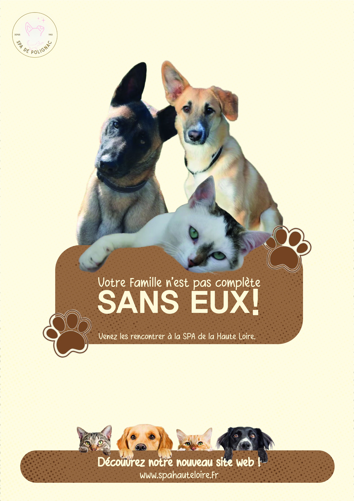
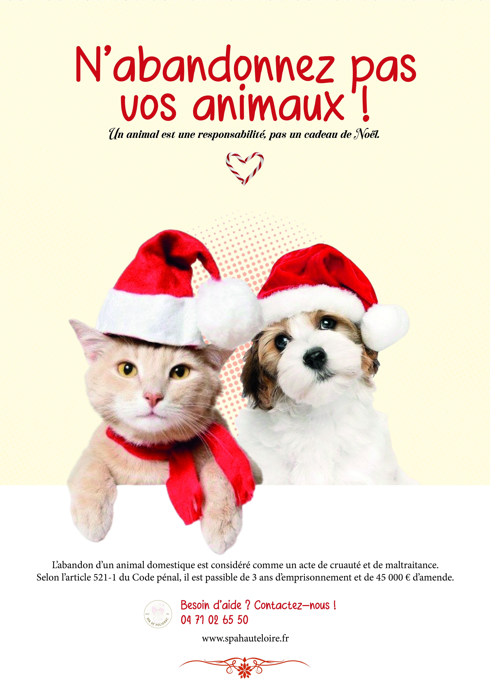
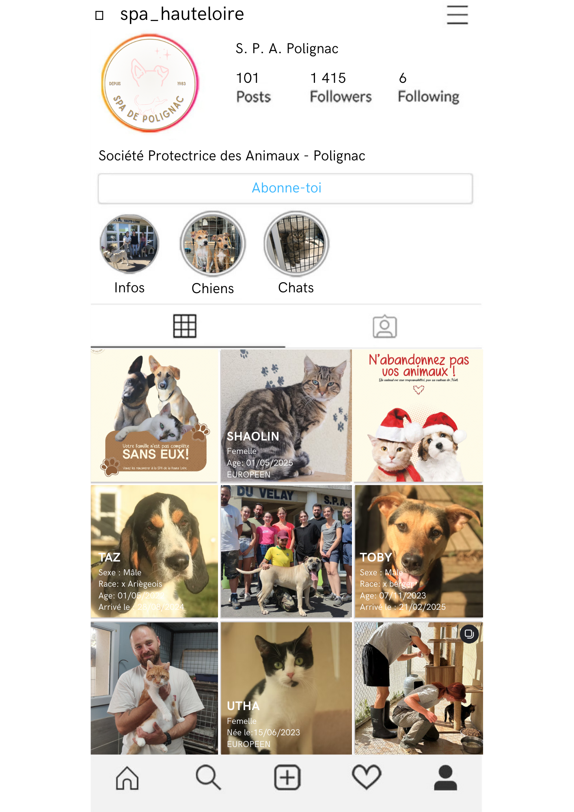

La Spa de Polignac, c'est quoi ? ✧˖°.
La SPA de Polignac est un refuge qui prends soin des animaux abandonnés ou maltraités, en leur offrant un abri, des soins et de l'amour. Comme l'association manque cruellement de visibilité, c'est là qu'on a trouvé notre solution grâce à notre projet !
Contexte du projet ✧˖°.
‧˚ʚ Ce projet consistait à concevoir une stratégie de communication globale et à refondre l’identité visuelle d'une petite association souffrant d'un manque de visibilité. Pour notre part, nous avons choisi le refuge de la SPA de Polignac. L'objectif était de moderniser son image de marque pour toucher un public plus jeune, tout en boostant les adoptions du refuge.
‧˚ʚ Ce projet m'a permis de développer mes compétences en gestion de projet et en direction artistique. J'ai renforcé ma capacité à travailler en équipe, à concevoir une charte graphique complète (logo, univers colorimétrique, typographies) sur Illustrator et Photoshop, ainsi qu'à traduire des contraintes budgétaires et temporelles réelles en un plan média cohérent.
Démarche & Réalisation ✧˖°.
‧˚ʚ Après avoir étudié l’univers de l’association, j’ai sélectionné et détouré des photos d'animaux provenant ou non de l'association elle-même, pour structurer mes compositions. J'ai créé un visuel moderne et chaleureux, pensé pour capter l’attention et sensibiliser le public à l’adoption. Enfin, j'ai organisé la mise en page de la campagne d'affiches de manière claire en y intégrant tous les éléments indispensables : slogans, logo de la SPA de Polignac que nous avons également refait et informations de contact.
Rendus ✧˖°.


Séries d'affiches de communication axées sur la sensibilisation et déclinées pour les fêtes de
Noël. Les teintes chaudes (marron, beige et rouge) créent une atmosphère conviviale et
sécurisante, idéale pour susciter l'empathie et sensibiliser le public à la cause animale. De
plus, l'association des typographies équilibre la proximité émotionnelle avec la lisibilité
requise pour des slogans de sensibilisation.
Utilisation de Adobe InDesign.

Réalisation de la refonte de la page Instagram de l'association. Utilisation de Canva.